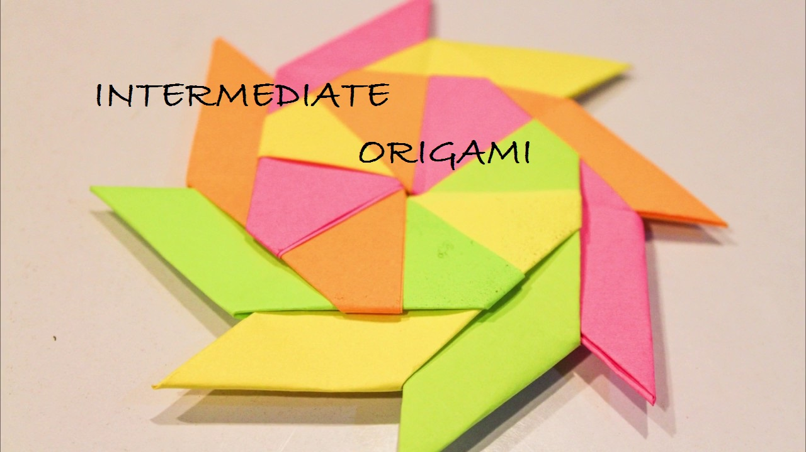
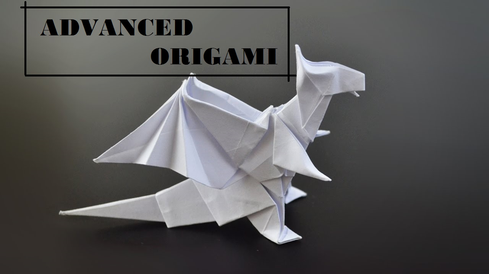

Origami Designs
WHAT IS ORIGAMI ?
Origami is the art of paper-folding. Its name derives from Japanese words ori (“folding”) and kami (“paper”). Traditional origami consists of folding a single sheet of square paper (often with a colored side) into a sculpture without cutting, gluing, taping, or even marking it.
HISTORY OF ORIGAMI
Japanese origami began sometime after Buddhist monks from China carried paper to Japan during the 6th century. The monks recorded their use of Zhezhi as early as 200AD. The first Japanese origami was used for religious ceremonial purposes only, due to the high price of paper.
Here are some easy, Intermediate and advanced origami
For Beginners
For Intermediates

For Advanced

--> Web page made by Evelyn sara